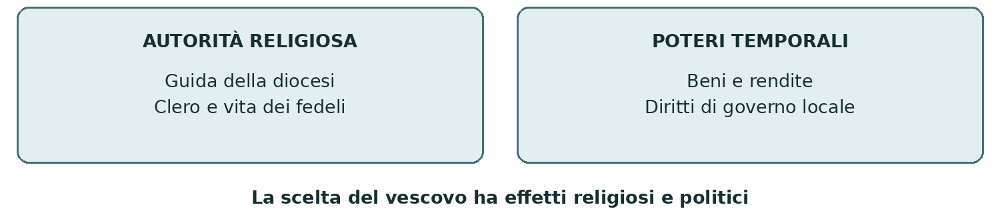
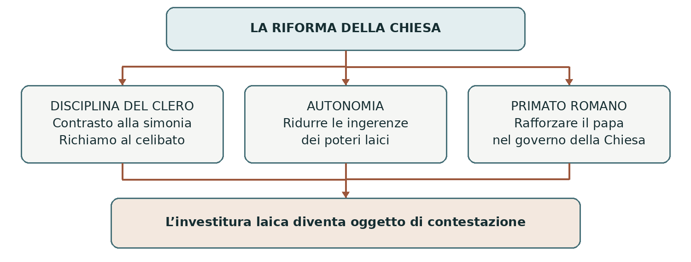
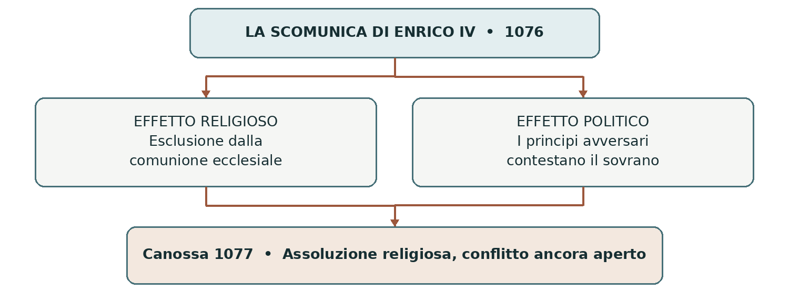
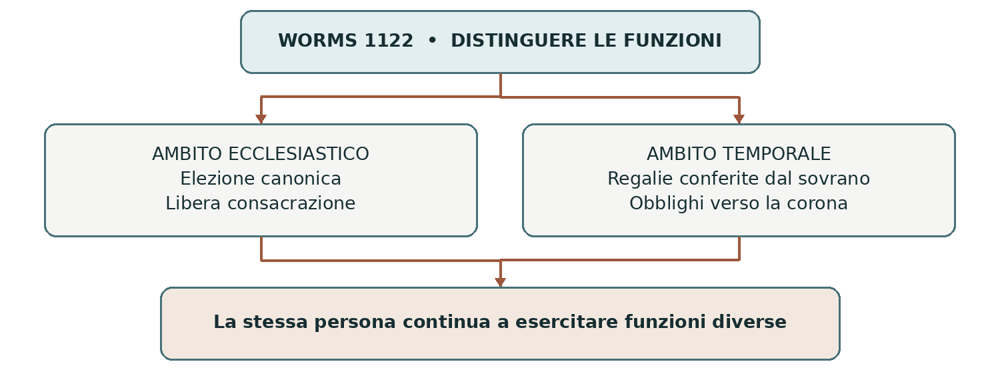
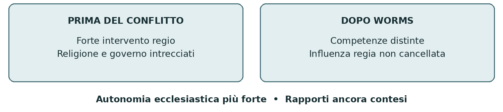

IL MEDIOEVO DEI POTERI UNIVERSALI
La lotta per le investiture
La scelta dei vescovi e il governo della cristianità
Fra XI e XII secolo papato e Impero entrarono in conflitto sul conferimento delle cariche ecclesiastiche. Al centro vi erano i vescovi, che guidavano le comunità cristiane e spesso esercitavano anche poteri sul territorio. La controversia trasformò i rapporti fra le due autorità e si chiuse nel 1122 con un compromesso, il concordato di Worms.
0 Domanda generatrice
Perché la scelta di un vescovo poteva mettere in conflitto un papa e un sovrano? Per capirlo dobbiamo ricostruire un mondo nel quale fede, ricchezza e governo erano strettamente collegati. La domanda non riguarda soltanto chi nominasse un ecclesiastico: riguarda chi potesse riconoscere, controllare e limitare il suo potere.
In sintesi La lotta per le investiture nacque dall’intreccio di funzioni religiose e politiche. Separarle sul piano delle procedure divenne la via per cercare un accordo.
1 Il mondo precedente
Nell’Europa occidentale medievale il papa, vescovo di Roma, e l’imperatore rivendicavano un’autorità che superava i confini dei singoli territori. Per questo si parla di poteri universali. Non disponevano però di un controllo effettivo su tutta l’Europa: dovevano confrontarsi con re, principi, signori, vescovi e comunità locali.
Non esisteva una netta separazione fra una politica esclusivamente laica e una religione estranea al governo. Il sovrano si considerava responsabile della difesa della cristianità; gli ecclesiastici possedevano terre e potevano amministrare giustizia o esercitare altri diritti pubblici. Collaborazione e rivalità convivevano dentro questo stesso ordine cristiano.
La diocesi era il territorio affidato alla guida religiosa di un vescovo. I suoi beni e i suoi diritti temporali, tuttavia, non coincidevano necessariamente con i confini della diocesi. Una funzione spirituale e un potere territoriale potevano appartenere alla stessa persona senza essere la stessa cosa.

I vescovi e la monarchia degli Ottoni
Perché i sovrani si appoggiavano agli ecclesiastici
I re utilizzavano vescovi e abati come collaboratori: erano uomini istruiti, disponevano di patrimoni e reti di relazioni, godevano di prestigio religioso. Gli Ottoni, dal X secolo, rafforzarono questo legame e concessero a sedi ecclesiastiche terre, immunità e diritti di governo. La collaborazione con la Chiesa aiutava anche a bilanciare la forza dei grandi signori laici.
La carica episcopale non si trasmetteva legittimamente dal padre al figlio. Il sovrano poteva quindi cercare di influire sulla scelta del successore, senza trovarsi necessariamente davanti a una dinastia ereditaria. Questo non garantiva una fedeltà assoluta: i vescovi avevano interessi propri, legami familiari e rapporti con le aristocrazie locali.
Nei manuali compare spesso l’espressione vescovi conti. È utile solo con cautela: non tutti i vescovi erano conti, né tutti ricevevano gli stessi poteri. È più preciso parlare di vescovi dotati anche di beni e diritti temporali. Alla morte del titolare, inoltre, il patrimonio della sede ecclesiastica non tornava automaticamente per intero al sovrano.
Ottone I e il controllo sull’elezione del papa
Nel 962 Ottone I fu incoronato imperatore a Roma da Giovanni XII. Il Privilegium Othonis confermava beni e diritti della Chiesa romana e affermava una forma di tutela imperiale sul papato, con un controllo sulla procedura dell’elezione e della consacrazione pontificia.
Non significava che ogni papa fosse semplicemente nominato dall’imperatore. L’elezione restava legata al clero e agli ambienti romani, ma il sovrano rivendicava il diritto di sorvegliarla e condizionarla. Il potere reale dipendeva anche dalla sua capacità di intervenire a Roma e dai rapporti con le famiglie più influenti.
Tre atti da non confondere
Atto | Che cosa riguarda |
|---|---|
Elezione | La scelta della persona destinata alla sede ecclesiastica. |
Consacrazione | Il rito religioso che conferisce l’ordine episcopale. |
Investitura temporale | Il conferimento di beni e diritti di governo da parte del sovrano. |
In sintesi L’appoggio ai vescovi era una risorsa per la monarchia. Proprio il coinvolgimento dei laici nelle cariche ecclesiastiche divenne però uno dei problemi affrontati dai riformatori.
2 Le fratture
Una Chiesa da riformare
Nell’XI secolo si diffusero richieste di rinnovamento religioso. Monasteri, ecclesiastici e gruppi di fedeli denunciavano la simonia, cioè il commercio di cariche e beni spirituali, e le violazioni della disciplina del clero. Il richiamo al celibato mirava anche a evitare che uffici e patrimoni ecclesiastici diventassero interessi familiari ereditari.
Le spinte alla riforma non partirono da un solo centro. La tradizione monastica di Cluny, fondata nel 910, valorizzava la disciplina religiosa e la protezione dalle ingerenze locali. Nelle città agirono anche movimenti come la pataria milanese, che contestava il clero ritenuto simoniaco e concubinario. Le loro proposte non coincidevano sempre con quelle del papa.
Non è corretto dividere i protagonisti in papi sempre riformatori e imperatori sempre difensori della corruzione. Anche Enrico III favorì ecclesiastici riformatori e intervenne nella crisi del papato nel 1046. La rottura maturò quando l’autonomia della Chiesa entrò in contrasto con il controllo esercitato dalla monarchia.
La libertà della Chiesa e l’elezione del papa
L’espressione libertas Ecclesiae, libertà della Chiesa, indicava la richiesta di sottrarre cariche e istituzioni ecclesiastiche al controllo dei poteri laici. Non equivaleva alla libertà religiosa moderna: i riformatori intendevano rendere la Chiesa capace di governarsi secondo le proprie norme.
Nel 1059 Niccolò II affidò un ruolo decisivo nell’elezione del papa ai cardinali, con una funzione di guida dei cardinali vescovi. Al restante clero e al popolo romano rimaneva l’assenso. Il provvedimento mirava soprattutto a contrastare le pressioni delle famiglie romane e contribuì a ridurre anche la tutela imperiale; non introdusse ancora il conclave nella sua forma successiva.

In sintesi La riforma collegò disciplina religiosa e autonomia istituzionale. Con Gregorio VII la contestazione delle investiture laiche si intrecciò a una forte rivendicazione del primato del papa.
3 Attori gruppi e conflitti
Protagonista | Obiettivo e risorse | Limiti e divisioni |
|---|---|---|
Gregorio VII | Difendere la libertà della Chiesa e rafforzare l’autorità romana. | Ha bisogno di alleati e incontra resistenze anche nel clero. |
Enrico IV | Conservare il legame con i vescovi e l’autorità monarchica. | Deve affrontare principi rivali; sarà imperatore solo dal 1084. |
Vescovi e abati | Difendere sedi, patrimoni e funzioni religiose. | Non formano un fronte unico: sostengono parti diverse. |
Principi tedeschi | Tutelare e ampliare i propri poteri territoriali. | Possono usare il conflitto per contrastare il re. |
Matilde di Canossa | Sostenere il papato con territori, risorse e mediazione. | Il suo potere è coinvolto direttamente nella guerra. |
Fedeli e comunità | Ottenere un clero credibile e difendere interessi locali. | Subiscono lotte, assedi e divisioni religiose. |
In sintesi Lo scontro non fu un duello isolato: dipese dalle scelte di principi, ecclesiastici e comunità. Le alleanze potevano cambiare.
4 Il processo storico
Gregorio VII e la rottura del 1075
Eletto nel 1073, Gregorio VII rese più energica la politica riformatrice. Nel 1075 il contrasto sulle investiture laiche divenne aperto: il papa negava ai laici il diritto di conferire la dignità ecclesiastica. Per Enrico IV questa pretesa minacciava uno strumento essenziale del governo del regno.
Nel registro di Gregorio, sotto l’anno 1075, compare il Dictatus papae, una raccolta di ventisette proposizioni sul primato pontificio. Vi si rivendicavano, fra l’altro, il diritto di deporre i vescovi e gli imperatori e quello di sciogliere i sudditi dalla fedeltà a governanti ingiusti. È una formulazione delle pretese papali: non la prova che tutti le riconoscessero e neppure un semplice editto sulle nomine.
Il contrasto si aggravò anche intorno alla sede arcivescovile di Milano. Nel 1076, a Worms, Enrico e vescovi suoi sostenitori rifiutarono l’autorità di Gregorio. Il papa rispose con la scomunica del re e dichiarò sciolti i sudditi dal giuramento di fedeltà. La controversia ecclesiastica diventava una crisi della legittimità monarchica.
Canossa e la ripresa della guerra
Il valore politico della scomunica
La scomunica escludeva dalla comunione della Chiesa. In una società cristiana colpiva il prestigio del sovrano e offriva ai suoi avversari un argomento per contestarlo. Non faceva scomparire automaticamente il suo potere: acquistava efficacia politica se principi, vescovi e sudditi decidevano di agire contro di lui.
I principi tedeschi ostili a Enrico sfruttarono la decisione papale. Il re rischiava di perdere la corona e cercò di ottenere l’assoluzione prima che i suoi avversari e il papa potessero consolidare un’azione comune. Attraversò le Alpi e raggiunse Canossa, dove Gregorio era ospite della contessa Matilde.
Il gennaio 1077
Enrico si presentò come penitente e ottenne la revoca della scomunica. La tradizione del suo soggiorno davanti al castello, nel freddo invernale, rese Canossa il simbolo dell’umiliazione del potere regio. Ma il significato politico fu più complesso: riconoscendo l’autorità religiosa del papa, Enrico cercava anche di sottrarre ai propri avversari il motivo religioso della ribellione.
Canossa non risolse la questione delle investiture. L’assoluzione non stabilì regole condivise per la scelta dei vescovi e non cancellò l’opposizione dei principi. Nel 1077 gli avversari di Enrico elessero un altro re, Rodolfo di Svevia. La lotta proseguì e Gregorio scomunicò nuovamente Enrico nel 1080.

Roma e l’esilio di Gregorio
Enrico sostenne un pontefice rivale, Clemente III, considerato antipapa dalla Chiesa che riconosceva Gregorio. Nel 1084 entrò a Roma e ricevette da lui la corona imperiale. Gregorio fu liberato dall’intervento dei Normanni di Roberto il Guiscardo, ma il saccheggio della città da parte delle loro truppe rese la sua posizione insostenibile. Lasciò Roma e morì a Salerno nel 1085.
In sintesi Il papa poteva colpire la legittimità del re; il re poteva reagire con alleati ed eserciti. Nessuno dei due riuscì a imporre una soluzione stabile, e il conflitto passò ai successori.
Il concordato di Worms
La ricerca di una soluzione praticabile
La lotta continuò oltre la vita dei suoi protagonisti. Enrico IV morì nel 1106, dopo essere stato costretto ad abdicare dal figlio Enrico V. Anche il nuovo sovrano entrò in conflitto con il papato. Il problema non dipendeva soltanto dai caratteri personali: riguardava il modo in cui erano organizzati Chiesa e regno.
Nel 1111 fallì un tentativo di accordo fra Enrico V e Pasquale II: il papa prospettò la rinuncia ecclesiastica ai beni e ai diritti ricevuti dalla monarchia in cambio della rinuncia regia alle investiture. Le resistenze mostravano quanto fosse difficile sciogliere completamente il legame fra vescovi e potere temporale.
Il 23 settembre 1122, a Worms, Enrico V e papa Callisto II giunsero a un compromesso. Il sovrano rinunciò all’investitura con anello e pastorale, simboli della funzione religiosa, e riconobbe elezioni canoniche e libere consacrazioni. Conservò il conferimento delle regalie, beni e diritti temporali legati alla corona, mediante lo scettro.

Regole diverse nei territori dell’Impero
Aspetto | Regno di Germania | Italia e Borgogna |
|---|---|---|
Scelta del vescovo | Elezione canonica alla presenza del sovrano o del suo rappresentante. | Elezione ecclesiastica senza l’analogo diritto di presenza riconosciuto al sovrano in Germania. |
Ordine degli atti | Dopo l’elezione, conferimento delle regalie prima della consacrazione. | Prima la consacrazione; regalie conferite entro sei mesi. |
Conseguenza | La corona conserva un’influenza importante sull’episcopato. | La procedura limita maggiormente l’intervento imperiale nella scelta. |
In sintesi Worms distinse le funzioni senza cancellarne l’intreccio. L’investitura temporale continuava a comportare obblighi verso il sovrano; la consacrazione restava un atto ecclesiastico.
5 Le fonti in dialogo
Dalla rivendicazione del primato al compromesso
Fonte A • Dictatus papae, proposizione XII. Il testo è conservato nel registro di Gregorio VII sotto l’anno 1075. Non è una lettera con un destinatario preciso: la sua funzione originaria è discussa, ma le proposizioni esprimono il programma del primato romano.
«Gli sia lecito deporre gli imperatori.»
Lettura della fonte. La frase rivendica una facoltà del papa. Non descrive un diritto pacificamente accettato da tutti: proprio la sua legittimità era al centro del contrasto. Dal documento conosciamo ciò che il papato pretendeva, non possiamo ricavare da solo quanto riuscisse a realizzarlo.
Fonte B • Concordato di Worms, impegno di Enrico V, 1122. L’accordo fu espresso in due documenti reciproci, uno imperiale e uno pontificio. Il brano seguente è una parafrasi didattica, non una citazione letterale:
Enrico rinuncia all’investitura con anello e pastorale e riconosce che nelle chiese del regno e dell’Impero vi siano elezione canonica e libera consacrazione.
Lettura della fonte. Il sovrano assume un obbligo definito; non rinuncia a ogni rapporto con i vescovi. Il documento di Callisto II, che completa l’accordo, gli riconosce il conferimento delle regalie e una presenza specifica nelle elezioni del regno di Germania. Leggere soltanto una metà del concordato darebbe un’immagine incompleta.
Domanda | Fonte A | Fonte B |
|---|---|---|
Che tipo di testo è? | Enuncia una pretesa generale di autorità. | Registra una concessione dentro un accordo. |
Che cosa vuole ottenere? | Affermare la superiorità del papa nel giudicare i sovrani. | Regolare il conferimento delle funzioni ecclesiastiche. |
Che cosa non dimostra? | Che tutti obbedissero al papa. | Che ogni conflitto fra Chiesa e Impero fosse finito. |
Leggere e argomentare
1. Nella fonte A individua la parola che esprime una facoltà rivendicata, non un fatto già compiuto.
2. Perché la rinuncia all’anello e al pastorale non coincide con la rinuncia alle regalie?
3. Confronta i testi: quale passa da un principio generale a una procedura negoziata? Motiva la risposta.
In sintesi Una fonte va letta considerando autore, scopo e limiti. Le pretese di un protagonista e gli esiti reali del conflitto non coincidono necessariamente.
Riferimenti: Dictatus papae, XII, traduzione riportata da Treccani, La lotta per le investiture; documenti di Worms nell’Internet Medieval Sourcebook della Fordham University, traduzione inglese di E. F. Henderson, 1910. La parafrasi italiana della fonte B è redazionale.
6 Conseguenze e nuovo assetto
Che cosa cambiò e che cosa rimase
Il papato uscì dal lungo conflitto con una maggiore autonomia dalla tutela imperiale. Si rafforzò anche la sua capacità di dirigere la Chiesa latina e di intervenire nelle controversie ecclesiastiche. La riforma fu quindi insieme un rinnovamento religioso e una trasformazione delle istituzioni.
L’imperatore dovette accettare un limite al proprio intervento nelle cariche religiose. Continuò tuttavia a conferire diritti temporali e, soprattutto in Germania, a influire sulle elezioni. Non si può concludere che i vescovi tedeschi fossero ormai soltanto dipendenti del re e quelli italiani soltanto del papa: conservavano rapporti e interessi molteplici.
I principi avevano sfruttato lo scontro per difendere i propri spazi d’azione. Il potere monarchico doveva fare i conti con questa pluralità di soggetti. Nemmeno la vita delle città restò estranea al conflitto: lotte fra gruppi locali, predicazione e scelte degli ecclesiastici coinvolsero anche i fedeli.
Il raccordo con Barbarossa
L’accordo del 1122 chiuse una fase della lotta per le investiture, ma lasciò aperta la questione dei rapporti fra autorità imperiale e pontificia. Con Federico I Barbarossa, eletto re nel 1152 e incoronato imperatore nel 1155, il contrasto si intrecciò alla crescita dei comuni italiani. È il passaggio sviluppato nella dispensa successiva.
In sintesi Worms introdusse una distinzione istituzionale, non una separazione moderna fra Stato e Chiesa. Il conflitto cambiò forma e continuò dentro un sistema di poteri concorrenti.
7 Conclusione
La scelta di un vescovo metteva in gioco la cura religiosa dei fedeli, il controllo di patrimoni e l’esercizio di diritti pubblici. Per questo papa e sovrano attribuivano tanto valore all’investitura. La soluzione del 1122 fu possibile quando si distinsero gli atti che riguardavano la funzione ecclesiastica da quelli relativi ai poteri temporali.

Sintesi finale I vescovi erano essenziali al governo della società medievale. La riforma contestò il controllo laico sulle cariche religiose e rafforzò il primato romano. Gregorio VII ed Enrico IV portarono il contrasto fino alla scomunica e alla guerra. Canossa risolse temporaneamente la rottura religiosa, ma non il problema istituzionale. Worms separò le procedure e riconobbe competenze diverse. La collaborazione rimase necessaria, mentre la pretesa di supremazia continuò a dividere papato e Impero.
Orientarsi nel tempo e nello spazio
Il periodo. Antefatto nel X secolo; riforma nell’XI; fase decisiva della lotta dal 1075 al 1122. Gli spazi. Regno di Germania, Italia e Borgogna appartengono al quadro imperiale. Roma è il centro del papato; Milano un luogo di conflitto sulla riforma; Canossa, nell’attuale Emilia, una sede di mediazione; Worms, sul Reno, il luogo dell’accordo.
Linea del tempo ragionata
Data | Evento | Perché conta |
|---|---|---|
962 | Incoronazione di Ottone I e privilegio ottoniano. | Si rafforza la tutela imperiale sul papato. |
1046 | Enrico III interviene nella crisi pontificia. | La riforma può inizialmente collaborare con l’Impero. |
1059 | Decreto di Niccolò II sull’elezione papale. | Diventa decisivo il ruolo dei cardinali. |
1073 | Elezione di Gregorio VII. | Il programma riformatore si intensifica. |
1075 | Investiture laiche contestate; Dictatus papae. | Si manifesta apertamente il conflitto di autorità. |
1076 | Enrico contesta Gregorio; prima scomunica. | La controversia colpisce la legittimità del re. |
1077 | Penitenza e assoluzione a Canossa. | Il conflitto religioso si attenua, la lotta politica continua. |
1080 | Seconda scomunica di Enrico. | Si apre una nuova fase dello scontro. |
1084–1085 | Enrico imperatore; Gregorio lascia Roma e muore. | Le vicende personali non risolvono la controversia. |
1111 | Fallisce l’accordo fra Enrico V e Pasquale II. | È difficile rinunciare ai legami patrimoniali e politici. |
1122 | Concordato di Worms. | Si distinguono consacrazione e investitura temporale. |
1152–1155 | Elezione e incoronazione di Barbarossa. | Si apre una nuova fase dei rapporti fra Impero e Italia. |
Due nomi uguali non indicano lo stesso evento
Worms 1076: assemblea nella quale Enrico IV e vescovi suoi sostenitori contestano Gregorio VII. Worms 1122: accordo fra Enrico V e Callisto II. Cambiano i protagonisti, il contesto e l’esito.
Enrico IV è il sovrano di Canossa. Enrico V, suo figlio, è il sovrano del concordato. Gregorio VII conduce la fase più aspra della riforma; Callisto II conclude il compromesso.
Le parole e i saperi irrinunciabili
Parola | Significato nel capitolo |
|---|---|
Diocesi | Territorio affidato alla guida religiosa di un vescovo. |
Investitura | Atto con cui si conferiscono un ufficio, beni o diritti; va precisato di quale ambito si parla. |
Temporale | Relativo a beni, governo e poteri terreni, distinto dallo spirituale. |
Simonia | Compravendita di cariche ecclesiastiche o beni spirituali. |
Celibato | Condizione di chi non è sposato; richiesta dalla disciplina della Chiesa latina a determinati membri del clero. |
Libertas Ecclesiae | Autonomia della Chiesa dalle ingerenze laiche nel proprio governo. |
Elezione canonica | Scelta compiuta secondo le norme della Chiesa. |
Consacrazione episcopale | Rito religioso che conferisce l’ordine di vescovo. |
Scomunica | Esclusione dalla comunione ecclesiale, con possibili conseguenze politiche. |
Antipapa | Pontefice rivale di quello riconosciuto come legittimo dalla Chiesa. |
Regalie | Beni e diritti spettanti alla corona, concedibili anche a ecclesiastici. |
Concordato | Accordo che regola questioni fra autorità ecclesiastica e potere politico. |
Dieci cose da saper spiegare
1. Nel Medioevo religione e governo erano profondamente intrecciati.
2. Vescovi e abati erano collaboratori importanti dei sovrani.
3. La carica episcopale non era ereditaria, ma la fedeltà al re non era automatica.
4. La riforma unì disciplina religiosa e richiesta di autonomia dai laici.
5. Gregorio VII rivendicò il primato del papa anche nel giudicare i sovrani.
6. La scomunica diventava politicamente efficace attraverso le scelte degli attori.
7. Canossa non chiuse né la lotta per le investiture né l’opposizione a Enrico IV.
8. Il concordato fu concluso da Enrico V e Callisto II nel 1122.
9. Worms distinse consacrazione e regalie, con procedure territoriali diverse.
10. Il papato rafforzò la propria autonomia, ma i conflitti con l’Impero continuarono.
Verificare e collegare
Comprendere cause e conseguenze
1. Perché i sovrani trovavano utile affidarsi ai vescovi? Indica due vantaggi e un limite.
2. Spiega il legame fra simonia, riforma e contestazione dell’investitura laica.
3. Perché la scomunica del 1076 mise in difficoltà Enrico IV? Quale ruolo ebbero i principi?
4. Che cosa ottenne Enrico a Canossa e che cosa rimase irrisolto?
5. Confronta le procedure di Worms in Germania e in Italia e Borgogna.
6. Perché il 1122 non può essere considerato la nascita della separazione moderna fra Stato e Chiesa?
Correggere tre errori
Riscrivi correttamente queste frasi e giustifica ogni correzione: «Ottone I stabilì che tutti i papi fossero nominati direttamente da lui»; «Canossa pose fine alla lotta per le investiture»; «A Worms l’imperatore rinunciò a ogni potere temporale sui vescovi».
Costruire una spiegazione storica
Scrivi 15–20 righe per rispondere alla domanda generatrice. Usa almeno quattro di queste parole: diocesi, investitura, simonia, scomunica, regalie, concordato. Collega una causa, una scelta dei protagonisti e una conseguenza. Distingui sempre autorità religiosa e poteri temporali.
Mappa concettuale per il ripasso
Problema: la scelta del vescovo incide su religione e governo.
Antefatto: i sovrani collaborano con ecclesiastici dotati di beni e poteri.
Frattura: la riforma contesta l’ingerenza laica e rafforza il primato romano.
Attori: papa e re, insieme a vescovi, principi, Matilde e comunità.
Processo: 1075 → scomunica del 1076 → Canossa → ripresa della guerra.
Compromesso: Worms distingue consacrazione e regalie.
Esito: più autonomia ecclesiastica, influenza regia persistente e nuovi conflitti.
Fonti e approfondimenti
Materiale di partenza: lezione di gbprof, investiture.ppt. Controllo storico: Treccani, voci Lotta per le investiture, Concordato di Worms, Gregorio VII, Niccolò II e Federico I; Cristina Sereno, Le diverse anime della riforma, Reti Medievali. Documenti: Privilegium Othonis in Reti Medievali, Antologia delle fonti altomedievali, XIII, 5; Dictatus papae e Concordato di Worms nell’Internet Medieval Sourcebook. I collegamenti completi sono raccolti nella nota di revisione per il docente.
Per consultare i documenti: sourcebooks.fordham.edu/source/g7-dictpap.asp • sourcebooks.fordham.edu/source/worms1.asp • www.rm.unina.it/didattica/fonti/anto_ame/cap_XIII/XIII_5_it_stampa.htm